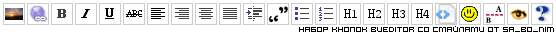

Набор кнопок для редактора BUEditor со смайлами
12 июн 2008
По просьбе читателя моего блога Олега я претворяю в жизнь свой давнишний план поделиться набором кнопок для редактора BUEditor с данного блога. В нем есть кнопка со смайлами, которые я находила сама, поэтому процесс немного осложнен, но и его можно осилить.
Хочу заметить, что способ вставлять смайлики кнопкой редактора не я придумала, поэтому не забудем указать ссылку на источник, который я редактировала под себя. У этого набора почти все кнопки сделаны с учетом того, что стоит модуль BBcode. Так как у меня его нет, мой набор работает и без этого модуля.
Итак, последовательность действий для Drupal 5.* (для Drupal6 не делала, поэтому не скажу, работает ли):
- Скачать и включить 2 модуля: bueditor и smileys (Smileys Import тоже включить).
- Скачать файл в приложении к этой записи.
- Распаковать Zip-архив. Вы увидите две папки: Smileys и BUEditor.
- В первой папке (Smileys) скопируйте папку my в директорию для наборов смайлов модуля smyleys: /sites/all/modules/smyleys/packs/.
-
- Зайдите в Админка → Настройки → Смайлы и выберите вкладку , вы должны увидеть новый набор my и рядом ссылку "установить".
- После того, как вы нажмете ее, нужно будет удалить example набор, при этом он никуда не денется, смайлики будут по-прежнему в папке packs, просто на сайте они не будут использоваться. Так что не бойтесь их удалять, вы всегда сможете вернуть все на место на этой же вкладке .
- Далее идите на вкладку и уберите там везде флажки (по умолчанию их и нет). У нас будут смайлы только в bueditor, другие места не нужны.
- Потом фильтр смайлов нужно включить. Это делается на странице настроек форматов ввода /admin/settings/filters. Выберите формат и нажмите изменить. Отметьте фильтр смайлов флажком.
- Во второй папке (BUEditor) лежат 2 файла и набор иконок. СНАЧАЛА скопируйте папку icons (в ней есть уже папка со смайлами) в директорию модуля bueditor. Она должна быть обязательно такой: /sites/all/modules/bueditor/, иначе не будет работать. Если вы не хотите отказываться от своих иконок для bueditor, или используете старые для чего-то еще, то просто содержимое моей папки icons поместите в icons из модуля. Названия тех иконок, которые в bueditor есть по умолчанию, остались такими же и в моей поставке, а остальные изменены, поэтому если вам скажет компьютер, что файлы с таким именем уже существуют, то не обращайте внимание и выберите либо пропустить, либо заменить. Ничего не потеряется.
- Далее нужно создать новый редактор. Пройдите Админка → Настройка → BUEditor и создайте новый набор.
- Импортируйте из скаченной папки BUEditor тот набор, который вы хотите, и нажмите . Full означает полный набор кнопок, который выглядит так:
а Light - набор, которым могут пользоваться посетители моего сайта, отправляя комментарий (можно посмотреть вживую в низу страницы)
- В Full версии есть кнопки выравнивания текста по левому, правому
краю, по центру и растяжения по ширине, и, чтобы они работали, нужно
добавить в CSS файл вашей темы такие стили:
.editor-right-button{text-align:right;}
.editor-left-button{text-align:left;}
.editor-center-button{text-align:center;}
.editor-justify-button{text-align:justify;} - Не забудьте дописать допустимые теги для ваших форматов ввода Админка → Настройка → Форматы ввода на вкладке ,
ведь их наличие в редакторе не означает, что они отобразятся в вашей
записи. Например, для выравнивания текста нужно разрешить тег
<div>(Если в формате не включен Фильтр HTML, то все теги позволяются). - Еще раз повторюсь, что кнопки сделаны на основе предложенных cwer, поэтому кнопка цитирования (которая кстати работает только с модулем QUOTE → не забудьте включить его фильтр в форматах ввода) с картинкой не работает в Opera
и если вы хотите сделать ее работоспособной в этом браузере, то в
настройках вашего набора кнопок уберите в выпадающем списке у этой
кнопки картинку и впишите в текстовое поле под этим списком любое слово,
которым хотите обозначить эту кнопку.
Эта замечательная кнопка оборачивает в теги
[quote]любой выделенный на странице текст.
Примечание: Помните, что здесь у кнопки "Вставить изображение" нет возможности загрузки. Только поставив модуль IMCE, можно включить загрузку картинок при нажатии на . Для того, чтобы работало с моим набором, отредактируйте содержимое этой кнопки, опираясь на этот код.
После того, как я проделала описанные мной выше операции, я (во-первых, ощутила кайф: как здорово делать по инструкции - не боишься ничего забыть и все получается) наткнулась на то обстоятельство, что модуль позволяет только 20 кнопок в ряд, что делает набор full не эстетичным. От проблемы можно уйти, закомментировав 105 строчку файла bueditor.js в папке bueditor. А если вам нужно поставить перенос строки в другом месте, то этот код поможет решить эту проблему.
Вот так выглядит процесс установки редактора Bueditor для моего сайта. Если для вас оказались лишними какие-то кнопки из наборов, удаляйте их и помните - чем больше неопытному пользователю дать кнопок, тем быстрее он в них запутается.
| Прикрепленный файл | Размер |
|---|---|
| bueditor_knopki_so_smailami_ot_SaBoNim.zip | 172.32 кб |

Спасибо за решение, я как-то искал выход, но не нашел.
cпасибо. а для 6-ой версии есть решение?
при закачке bueditor_кнопки_со_смайлами_от_Sa_Bo_Nim.zip - качалка говорит что файл удален. Немогли бы поновить его? Спасибо.
Наконец нашла его на своем компьютере. При переезде на новый хостинг архив с кириллицей в названии повредился и не копировался. Спасибо что заметили! Можете пользоваться
Спасибо, поставил на шестую версию, почти всё работает.
Не работает только вставка ссылки и превью, но это решается простой заменой кода кнопки из редактора по умолчанию.
классная статья! спасибо!
Может кому пригодится... Drupal 6.13
Делал все по инструкции, но при нажатии на иконку со смайликами выскакивает popup с пустыми квадратиками вместо смайлов... так как я в скриптах не силен - погуглил немного и нашел иное решение
php:$L = drupal_to_js(_smileys_list());
$P = base_path();
drupal_add_js("
var smlyList = $L, smlyPath = '$P';
var smlyWrap = \$('<div style=\"width:200px\"></div>');
\$.each(smlyList, function(i, s) {\$('<a href=\"#\" title=\"'+ s.description +'\"><img src=\"$P'+ s.image +'\" alt=\" '+ s.acronyms.split(' ')[0] +' \" /></a>').css('margin', '0.5em').appendTo(smlyWrap)});
", 'inline');
return 'js:
editor.dialog.open("Smileys");
$("tr.body>td", editor.dialog.popup).empty().append(smlyWrap);
$("a", smlyWrap).each(function(){this.onclick=function(){editor.dialog.close();editor.active.replaceSelection(this.firstChild.alt, "end"); return false;};});';
Источник - http://youweb.ru/node/105
Заменил код кнопки на этот и все заработало)))
Скрипт берет смайлики прямо из модуля Smiyles
Спасибо за статью) Мне, чайнику, она пришлась как раз кстати)
Теперь любуюсь на смайлики и вспоминаю автора
Спасибо, многое заюзал-)
а не проще вместо вставки доп. стилей сразу проставлять выравнивание как
<div style="text-align:left;">%TEXT%</div>Сейчас такое время, когда все стараются полностью, насколько это возможно, отделить визуальное оформление (с помощью CSS) от контента. Поэтому писать стили непосредственно в тексте считается неприемлемым.
Я думаю это немного не тот случай) Да и проще так
а как на счет добавления других смайлов а не смайлов автора? Каким образом это можно сделать?
Вы можете воспользоваться другим набором, например, отсюда - http://forum.drupal.ru/node/26203.
А вообще, идея в том, что пути к смайлам прописаны в коде кнопки и в файле вручную. Поэтому либо вам нужно заменить картинки для смайлов непосредственно в папке со смайлами, либо изменять код.
Я уже понял что нужно прописывать для каждого отдельно, заглянув в ваш файл.
От сюда голова начала работать. есть идея которую по моему легко для програмиста привести в жизнь.
Названия смайлов вещь в принципе не нужная. Можно написать програмку, в которую ты загружаешь какие угодно картинки смайлов жмешь "Вперед!" и она тебе на выходе дает готовый файл с кнопками.
Тогда точно не будет никакой зависимости от определенного вида смайлов.
Если вы напишите такой скрипт и поделитесь им со всеми, будет здорово!
к сожалению, или к радости я не программист. у меня другая специальность...
Я только поделился идеей.
Как вовремя попалась эта статейка, теперь не придется изобретать велосипед, спасибо
Обновлённый код работает с новой версией Bueditor 6.x-2.0-beta1
php:$L = drupal_to_js(_smileys_list());
$P = base_path();
drupal_add_js("(function($){
var click = function() {
BUE.active.replaceSelection(this.firstChild.alt, 'end');
return false;
};
var map = function(s) {
return $('<a href=\"#\" title=\"'+ s.description +'\"><img src=\"$P'+ s.image +'\" alt=\" '+ s.acronyms.split(' ')[0] +' \" /></a>').css('margin', '0.5em').click(click)[0];
};
var links = $.map($L, map);
BUE.smlyWrap = function() {
return $('<div style=\"width:200px\"></div>').append(links);
};
})(jQuery);", 'inline');
return 'js: E.quickPop.open(BUE.smlyWrap());';
Источник: http://youweb.ru/node/106
Не появляются иконки, когда пытается дать комментарий зарегистрированный пользователь, я ему включил все разрешения и все равно иконок нет. Почему?
Заранее благодарен за ответ.
BuEditor - прекрасная вещь для тех кто понимает, что означают символы в значках <>. Однако, многих это просто пугает. Поэтому, пекрасным выбором под drupal будет редактор FCKEditor.
Когда начинаю делать новый сайт, то по настроению ставлю либо BUEditor, либо FCKEditor. И там и там есть много плюсов, а минусы - это плюсы в противоположном модуле, а точнее их отсутствие в этом. Вот кнопочка, которая делает из простого изображения изображение с эффектом HighSlide (с наличием пакета скриптов такогого)
js:var reg = /src="(.*)"/ ;
var code = editor.active.getSelection();
var arr = reg.exec(code)
if (arr) {
var ahref1 = '<a href="';
var ahref2 = '.jpg" class="highslide" onclick="return hs.expand(this)">';
var ahref3 = '</a>';
var result = arr[1].replace("_thumb", "")
editor.active.replaceSelection(ahref1 + result + ahref2 + code + ahref3);
}
З.Ы.
не модуль HighSlide, а именно набор скриптов скачанных с офф-сайта HighSlide - http://highslide.com/
инфа от сюда - http://www.drupalka.ru/node/62
sa_bo_nim , спасибо за статью! Жаль что она очень давно написана, и мне помогла лишь отчасти. Сам долго мучился пока настроил эти смайлики. Вот, я написал обновленную версию руководства, со скриншотами, надеюсь оно кому-нибудь облегчит жизнь: http://nikita-petrov.com/drupal/qip-smayliki-v-drupal-cherez-modul-smiles-i-knopka-dlya-nih-v-bueditor
Никита, пожалуйста! Очень здорово, что вы сделали такой набор кнопок и выложили для всех. Спасибо!
Комментировать